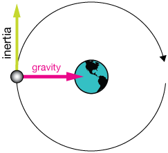
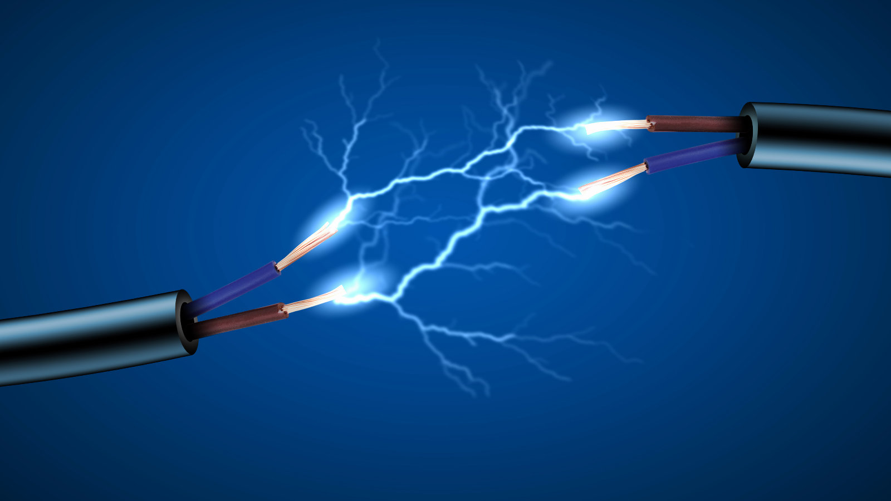

Siméon-Denis Poisson
Siméon-Denis Poisson It was in 1809 that he became a professor of Science, but it wasn’t till 1812 that they moved him to teaching specifically physics, but for science he was able to bring in his math elements, but not completely. In his work for science, he focused on planetary orbit as well as calculating gravity like the gravitational attraction that is exerted in specifically spheres and ellipses. His ideas about this were later used in the 20th century. His ideas about how gravity is distributed through out a planet due to the mass the planet holds.
 Poisson also used his mathematic ideas to work with electricity and to come up with a theory on how electricity works. His idea of how electricity works is thought of as similar partials of two different fluids repel but the unlike particles of those two fluids are attracted, almost like a magnet with the positives and negatives. He also applied the Poisson distribution mentioned in math to show random events that could occur in space and time.